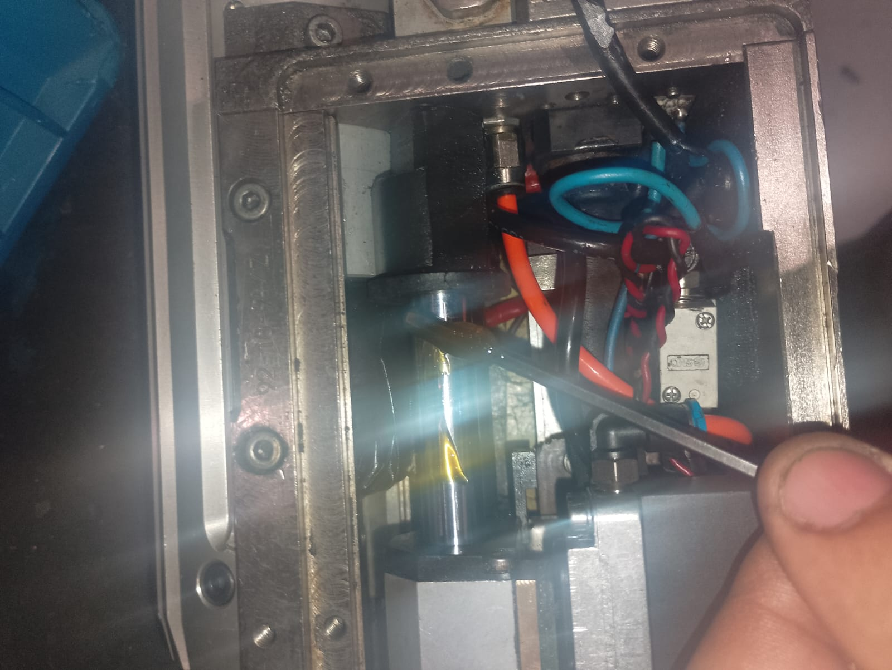

Após a retirada do recepitor , retire toda à graxa velha do cilindro.
Em seguida aplique uma pequena porção de graxa nova

Em seguida aplique uma pequena porção de graxa nova

Em seguida cheque a condição do cabo de solda e layaut das manguiras.